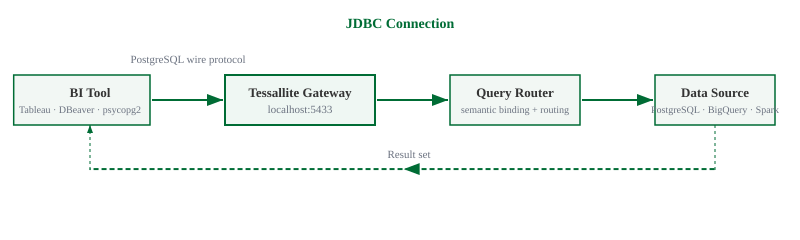

Connect a BI Tool via JDBC
What this covers
Connecting a JDBC-compatible BI tool — Tableau, Power BI, DBeaver, or any PostgreSQL-compatible client — to a Tessallite workspace using the JDBC endpoint on port 5433.
Before you start
- Role required: Analyst (Viewer) or higher.
- You will need: the workspace slug, your email address, and your password.
- You will also need: the host address and port of the Tessallite gateway, obtained from your system administrator.
- The gateway JDBC port is
5433. For local installs, the host islocalhost. For cloud installs, your system administrator provides the hostname. - On GCP, JDBC requires a TCP load balancer. If your system administrator has not configured one, use the XMLA connection (Excel or Power BI) instead.
Connection details
| Setting | Value |
|---|---|
| Host | localhost (local install) or the hostname provided by your system administrator (GCP) |
| Port | 5433 |
| Database | Your workspace slug (e.g. acme) |
| Username | Your email address (e.g. analyst@acme.com) |
| Password | Your Tessallite password |
| SSL | Not required for local installs |
The workspace slug is the identifier for your tenant. It is case-sensitive. If you are uncertain of the slug, ask your system administrator.
Connecting with DBeaver
- Open DBeaver.
- Click New Database Connection (the plug icon in the toolbar).
- In the connection type list, select PostgreSQL.
- Enter the Host, Port, Database, Username, and Password using the values from the table above.
- Click Test Connection. A confirmation dialog should appear.
- Click Finish.
- The connection appears in the left panel. Expand it to see the available tables. Each model published in the workspace appears as a schema.

Connecting with Tableau
- Open Tableau Desktop.
- In the Connect pane on the left, select PostgreSQL.
- Enter the server address in the Server field.
- Enter
5433in the Port field. - Enter the workspace slug in the Database field.
- Enter your email address in the Username field and your password in the Password field.
- Click Sign In.
- The tables for the selected workspace are available in the data source pane.
Connecting with psycopg2 or other drivers
Pass the following connection parameters to your driver:
host=<hostname>
port=5433
dbname=<workspace-slug>
user=<your-email>
password=<your-password>Any PostgreSQL-compatible driver accepts these parameters directly.
What you see after connecting
Each model published in the workspace appears as a schema. Within each schema, the dimensions and measures defined in the model are listed as columns. Querying them returns results immediately. Tessallite routes the query to the fastest available source — a pre-aggregated summary if one exists, or the raw data source otherwise.

Troubleshooting
| Symptom | Likely cause | What to do |
|---|---|---|
| Connection refused on port 5433 | Gateway is not running | Ask your system administrator to check the gateway service |
| Authentication failed | Wrong slug, email, or password | Check all three fields exactly — the slug is case-sensitive |
| No tables visible | No models exist in the workspace | A modeller must publish at least one model before tables are visible |
| Timeout on GCP | No TCP load balancer configured | Use the XMLA connection for Excel or Power BI, or ask your administrator to add a load balancer |